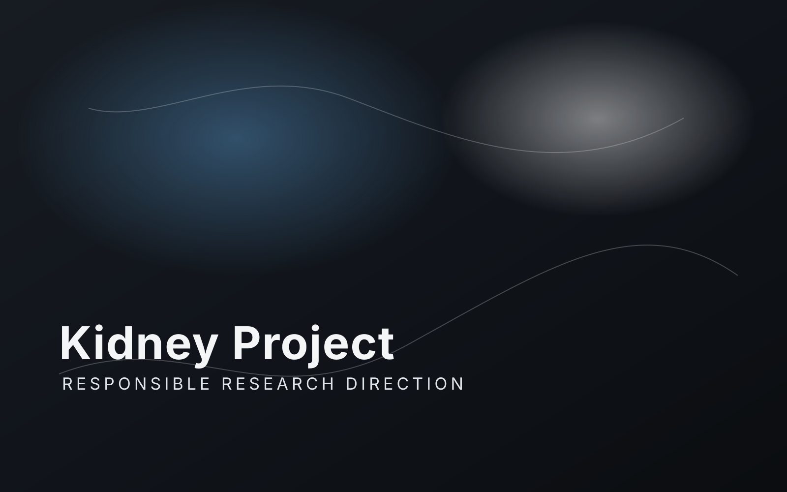

Kidney Project
Rethinking support systems with a responsible research tone.
This page presents a serious research direction. It should communicate the problem clearly, avoid exaggerated claims, and focus on method, discipline, and transparency.
Problem
Start with the need
Introduce the challenge in plain language. Explain why current approaches can be difficult, limited, or burdensome without slipping into sensational language.
Direction
Stay disciplined
Present the project as a research effort. Show what is being explored, what is not yet known, and how future updates will be documented in the Library.